Exercise 1: Name pictures - part 2
Write the names of the following pictures.10.
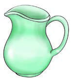
A picture of a jug with a wide body, open top, pouring lip, and one handle.11.
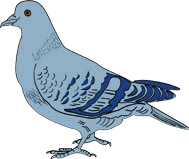
A picture of a pigeon standing side-on with a short beak, folded wings, two legs, and tail feathers.12.
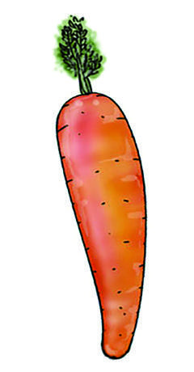
A picture of One tapered carrot root with leafy stems at the wide end.13.
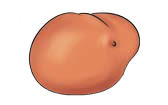
A picture of One rounded potato with an uneven surface.14.
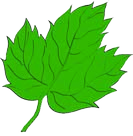
A picture of One broad leaf with a pointed tip, central vein, and branching side veins.15.
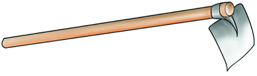
A picture of a hand hoe with a long handle and a flat metal blade set at an angle.16.
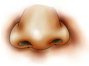
A picture of a human nose viewed from the front with two nostrils.17.
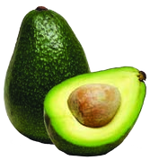
A picture of One pear-shaped avocado fruit with dark green skin.18.
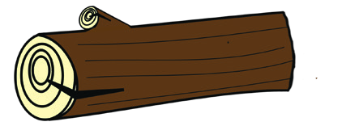
A picture of a short cut log lying on its side with a circular end and rough bark.19.
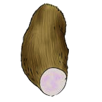
A picture of One long irregular yam tuber with rough brown skin and a pale cut end.20.
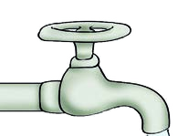
A picture of a water tap with a turning handle and a downward-pointing spout.21.
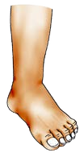
A picture of One human leg from the upper thigh to the foot.